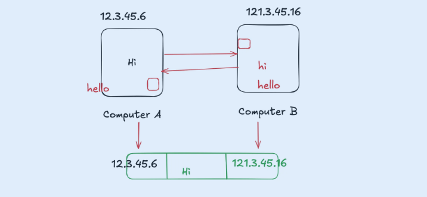
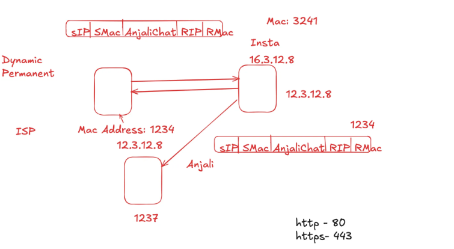
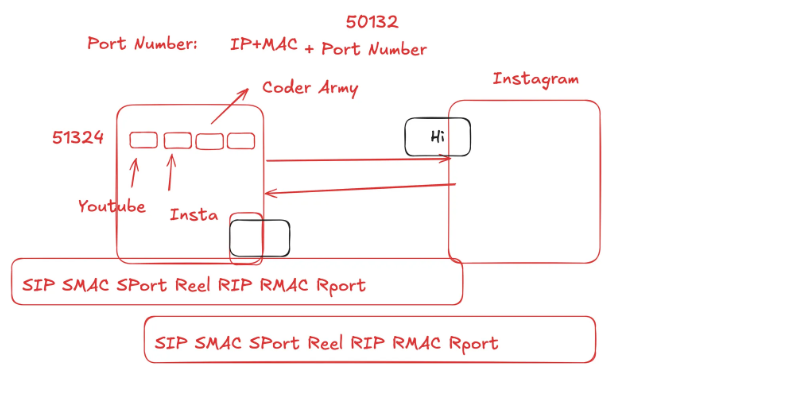
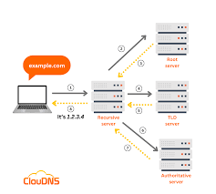

Web development is the process of creating and maintaining websites and web applications for the internet. It involves designing,
coding, and building the functionality that users see and interact with (front-end development), as well as the behind-the-scenes
operations like databases and server logic (back-end development).
Topic Cover:
HTML CSSBefore starting HTML and CSS, first understand how internet work?
The most fundamental truth is that we have information on one computer (Computer A) and we want it to be on another computer (Computer B). These computers are not in the same room.
How do we solve this? The simplest, most primitive way is to physically carry the information (e.g., on a USB stick). This works, but it's slow and doesn't scale. We need a direct, electronic connection.
So, we run a cable (like an ethernet cable or a fiber optic line) between Computer A and Computer B. We can now send electrical signals or pulses of light down this cable. We can agree on a simple code:
a high-voltage signal means "1," and a low-voltage signal means "0."
We have just created the most basic form of a network: a direct link. We can now send bits (1s and 0s) between two computers.
This works for two computers. But what if we have three computers (A, B, and C) and they all need to talk to each other? We would need a cable from A to B, from B to C, and from A to C. For four computers,
we'd need six cables. For 100 computers, we'd need 4,950 cables.
This is a failure of scale. Connecting every machine to every other machine directly is physically impossible.
The logical solution is to have a central device. Every computer connects to this one central point (let's call it a Switch). When Computer A wants to talk to Computer C, it sends the message to the switch, and
the switch forwards it only to Computer C.
We have just invented a Local Network. A group of computers in close proximity (like an office or a home) can now communicate efficiently.
Now, our office has a local network. Another office across town also has its own local network. How does a computer on our network talk to a computer on their network?
We face the same scaling problem. We can't run a wire from every computer in our office to every computer in theirs.
The logical solution is to connect the networks themselves. We need a special, dedicated computer that is connected to our network and also connected to their network. Its only job is to pass messages,
or "route" traffic, from one network to the other. Let's call this device a Router.
Now, if we want to connect to a third network, we just connect our router to their router. Suddenly, we can build a massive, sprawling web by connecting networks to other networks.
This is the fundamental truth of the Internet. The Internet is a "network of networks." It is not one giant cloud; it is millions of private and public local networks all connected by these special routing devices.
We have built a global web of interconnected networks. If I'm on my computer in my office, how do I send a message to a specific server in another country? There are millions of computers. I need a unique
address for every single device.
This gives rise to the need for a universal addressing system. Just like the postal service needs a unique street address for every house in the world, our network of networks needs a unique address for every
connected device.
This is the reason the IP Address (Internet Protocol Address) exists. It's a unique label (e.g., 142.250.184.142) assigned to each device. When a router sees a message, it looks at the destination IP address
and says, "Based on this address, I don't need to send it to the network on my left; I need to send it to the network on my right to get it one step closer to its final destination." Routers don't know the full path;
they just know the next best "hop" to send the message on.
If I want to send a large file, like a 1-hour video, it is a huge stream of data. If I try to send it all at once:
I would completely monopolize the connection, and no one else could send anything until my video was done.
If even a single bit of information gets corrupted during the transfer, the entire file is ruined, and I have to start over from the beginning.
This is inefficient and unreliable. The logical solution is to break the large file into many thousands of small, numbered pieces. Let's call them Packets.
Each packet is like a tiny envelope. It contains:
A small piece of the data (a "payload").
The destination IP address (where it's going).
The sender's IP address (so they can reply).
A number, so the receiving computer knows how to reassemble them in the correct order ("Packet 1 of 5,000," "Packet 2 of 5,000," etc.).
These packets can travel independently across the internet, sometimes even taking different routes. The receiving computer gathers all the packets, checks if any are missing (and requests them again if they are), and reassembles them in the correct order to recreate the original file.
This system of rules for addressing, breaking down, sending, and reassembling data is called a Protocol. The main one used on the internet is TCP/IP (Transmission Control Protocol / Internet Protocol).
So, the internet isn't magic. It's a series of logical solutions to a series of fundamental problems:
Problem: Share data between two computers. Solution: A direct physical link.
Problem: Connect many computers efficiently. Solution: A local network with a central switch.
Problem: Connect many networks efficiently. Solution: An internetwork connected by routers.
Problem: Find a specific computer in this massive web. Solution: A universal IP Address for every device.
Problem: Send data reliably and fairly without errors. Solution: A set of rules (TCP/IP) to break data into small, addressed packets that can be reassembled.
An IPv4 (Internet Protocol version 4) address is the classic IP address format everyone is used to seeing.
Structure: It's a 32-bit number. To make it readable for humans, we divide it into four 8-bit sections, and write each section as a decimal number from 0 to 255.
When the internet was designed, 4.3 billion seemed like an infinite number. But with the explosion of laptops, phones, servers, smart watches, and even smart refrigerators, we quickly realized we would run out.
This scarcity is the single most important reason we have public and private IPs.
A Public IP address is your global, unique address on the internet.
Analogy: The company's main, public phone number.
Uniqueness: It must be globally unique. No two devices on the internet can have the same public IP address at the same time.
Purpose: To be reachable from anywhere in the world. This is the address that web servers, email servers, and any other public service use.
Assignment: It is assigned to you by your Internet Service Provider (ISP) (Comcast, AT&T, etc.). You don't control it; you lease it from them.
Who has one? Your home router has one. The server hosting google.com has one. The server hosting Netflix has one.
When you go to a site like whatismyip.com, it shows you the Public IP address of your router. From the internet's perspective, your entire home network looks like a single device with that one public address.
A Private IP address is a local address used only within your own private network (e.g., your home Wi-Fi, your office network).
Analogy: The employee's private, 4-digit extension number.
Uniqueness: It only needs to be unique on your local network. My laptop can have the address 192.168.1.100 on my home Wi-Fi, and your laptop can have the exact same address on your home Wi-Fi. They don't conflict because they are in separate, private networks.
Purpose: To allow devices on the same local network to communicate with each other without needing a globally unique address for each one. Your laptop talks to your printer using private IPs. Your phone streams to your Chromecast using private IPs.
Assignment: It is assigned to your devices by your own router.
Reserved Ranges: The internet authorities have reserved specific ranges of addresses just for this purpose. If you see an IP address starting with one of these, you know it's a private address:
10.0.0.0 to 10.255.255.255 (Used by large corporations)
172.16.0.0 to 172.31.255.255 (Used by medium-sized networks)
192.168.0.0 to 192.168.255.255 (Most common for home networks)
IPv6 (Internet Protocol version 6) is the next generation of the Internet Protocol. Its primary purpose was to solve the address exhaustion problem of IPv4.
The fundamental difference is the size of the address:
IPv4: Uses a 32-bit address, giving us ~4.3 billion unique addresses.
IPv6: Uses a 128-bit address.
The difference between 32-bit and 128-bit is not 4x. It's an exponential leap that is difficult to comprehend.
The number of possible IPv6 addresses is 2^128, which is roughly: 340,000,000,000,000,000,000,000,000,000,000,000,000 (340 undecillion)
Because it's so long, the format is different. It uses hexadecimal (numbers 0-9 and letters a-f) instead of just decimal numbers.
An example of a full IPv6 address:
2001:0db8:85a3:0000:0000:8a2e:0370:7334
It's broken down into:
Eight groups of four hexadecimal characters.
The groups are separated by colons (:).

IP Address
A MAC (Media Access Control) Address is a unique, permanent serial number burned into every network-capable piece of hardware (your laptop's Wi-Fi card, your phone, your smart TV,
the network port on your desktop).
To track you, if you get offline and someone get the ip, they will get your message.
A MAC address is a 48-bit number. To make it readable for humans, it's typically written as 12 hexadecimal digits.
The most common ways you'll see it displayed are:
Colon-Separated (Most Common):
Hyphen-Separated (Common on Windows):
Period-Separated (Used by Cisco and other network gear):
No Separators (Less common, seen in some software):
Open Command Prompt:
Click the Start Menu.
Type cmd and press Enter.
(Alternatively, press Win + R, type cmd, and press Enter).
Run the Command:codeCode
ipconfig /all
If you only want to see the MAC addresses without all the other details, you can use the getmac command.
getmac /v
Open Terminal:
Open Spotlight Search (press Cmd + Space).
Type Terminal and press Enter.
Run the Command:codeCode
In the window that appears, type the following command and press Enter:
ipconfig

MAC Address
Port numbers are numerical identifiers (0-65535) in computer networking that identify specific applications or services on a device. They work with IP addresses to direct network traffic to the correct
service on a machine, with common ports assigned to standard applications like HTTP (port 80) and HTTPS (port 443).
A port number is a 16-bit unsigned integer.
Let's break that down:
16-bit: This means the number is stored using 16 binary digits (1s and 0s).
Unsigned: This means it cannot be negative. The values are all positive.
Because it's a 16-bit number, the total number of possible ports is 2^16, which equals 65,536.
To prevent chaos, the internet authorities (IANA) have divided the 65,536 available ports into three categories. This is the most practical format for you as a developer to understand.
These are the VIPs of the port world. They are reserved for the most common, fundamental, and standardized internet services.
Controlled By: Strictly managed by IANA.
Privileges: On most operating systems (like Linux and macOS), you need administrator (root or sudo) privileges to run a program that listens on these ports. This is a security measure to prevent rogue
applications from impersonating standard services.
Key Examples for a Developer:
21: FTP (File Transfer Protocol)
22: SSH (Secure Shell) - How you will log into your servers.
25: SMTP (Simple Mail Transfer Protocol) - For sending email.
53: DNS (Domain Name System)
80: HTTP (HyperText Transfer Protocol) - The standard for unencrypted web traffic.
443: HTTPS (HTTP Secure) - The standard for encrypted web traffic.
These ports are for specific applications or services that are not as universal as the "well-known" ones. Companies and developers can register a port for their software to avoid conflicts with other applications.
Controlled By: Less strict. You can request a port from IANA.
Privileges: You do not need administrator privileges to use these ports. This is the "user space" for applications.
Key Examples for a MERN Developer:
3000: The unofficial but extremely common default for running React and Node.js development servers. You will use this constantly.
3306: MySQL databases.
5432: PostgreSQL databases.
27017: The default port for MongoDB, the database in the MERN stack.
8080: A very common alternative port for web servers during development.
These ports are not meant for public-facing servers. Their job is completely different.
Controlled By: No one. They are for temporary, private use.
Purpose: When your web browser (the client) makes a request to a server (e.g., to google.com on port 443), your computer's operating system needs to assign a temporary **source port** for its side of the conversation. It grabs a random, unused port from this high-numbered range for the duration of that single connection.
Key Takeaway: You never configure your server applications to listen on these ports. They are used automatically by the client side of a connection.

PORT Number
DNS is the global, distributed system that translates the human-friendly domain names into the computer-friendly IP addresses. Without it, you'd have to memorize hundreds of IP addresses to browse the web.
Before your computer does any work, it checks if it already has the answer. Speed is everything. It checks in this order:
Browser Cache: The browser itself keeps a short-term memory of recently visited websites. If you were just at google.com five minutes ago, the answer is probably here.
Operating System (OS) Cache: If the browser doesn't have it, your OS (Windows, macOS, Linux) also has a cache.
Router Cache: Some routers also maintain their own DNS cache.
If the IP address is found in any of these caches, the process stops here, and your browser immediately connects to the IP address. This is why websites you visit often load so quickly.
If the answer isn't in any local cache, your computer needs to ask for help. It sends a query to its configured Recursive DNS Resolver.
Who is this?This is usually a server run by your ISP. Alternatively, you might use a public one like Google's (8.8.8.8) or Cloudflare's (1.1.1.1).
What does "Recursive" mean?It means this server promises to do all the hard work to find the final answer on your behalf. It will "recurse" through the internet's DNS hierarchy until it finds what you're looking for.
The Recursive Resolver doesn't know every IP address in the world. Instead, it knows how to navigate the global DNS system, which is a giant, hierarchical tree. It starts from the top and works its way down.
The Root Servers: The resolver first asks one of the 13 logical Root Servers in the world. It doesn't ask "What is the IP for www.google.com?". It asks a simpler question: "Hey, where can I find the servers that manage the .com domain?"
The Root Server replies: "I don't know about google.com, but here is the address for the .com TLD servers."
The TLD Servers: The resolver now asks one of the Top-Level Domain (TLD) Servers for .com. Again, it asks a simple question: "Hey, where can I find the servers that are in charge of the google.com domain?"
he TLD Server replies: "I don't know the IP for www.google.com specifically, but I know who does. The official, authoritative servers for google.com are at these addresses (e.g., ns1.google.com)."
The Authoritative Name Server: This is the final step. The resolver asks one of Google's own Authoritative Name Servers. This server is the source of truth for the google.com domain. It asks the final question: "What is the IP address for www.google.com?"
The Authoritative Server checks its records and gives the final answer: "The IP address for www.google.com is 142.250.72.206."
The Authoritative Server sends the IP address back to the Recursive Resolver.
The Recursive Resolver saves (caches) this answer for a period of time (called the TTL or Time-To-Live). If anyone else asks it for google.com in the next few hours, it can answer instantly without doing the whole search again.
The Recursive Resolver sends the IP address back to your computer's operating system.
Your OS gives the IP to your browser.
Now, finally, your browser has the IP address it needs. It can now open a direct connection to 142.250.72.206 on port 443 (for HTTPS) and say, "Please send me the webpage for www.google.com."
The DNS process is complete.

DNS